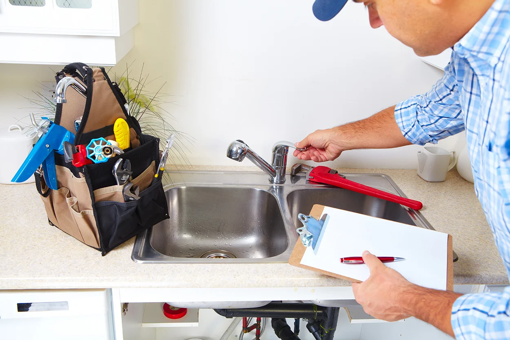
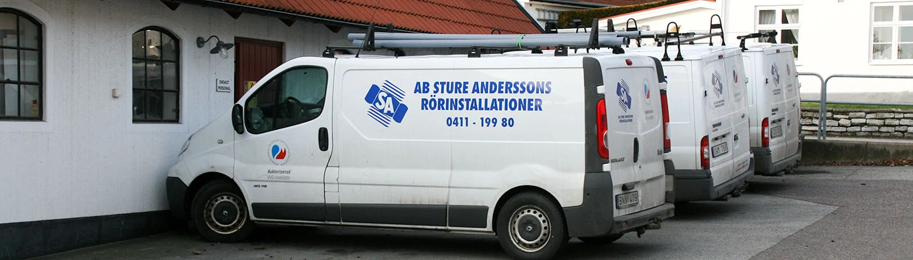
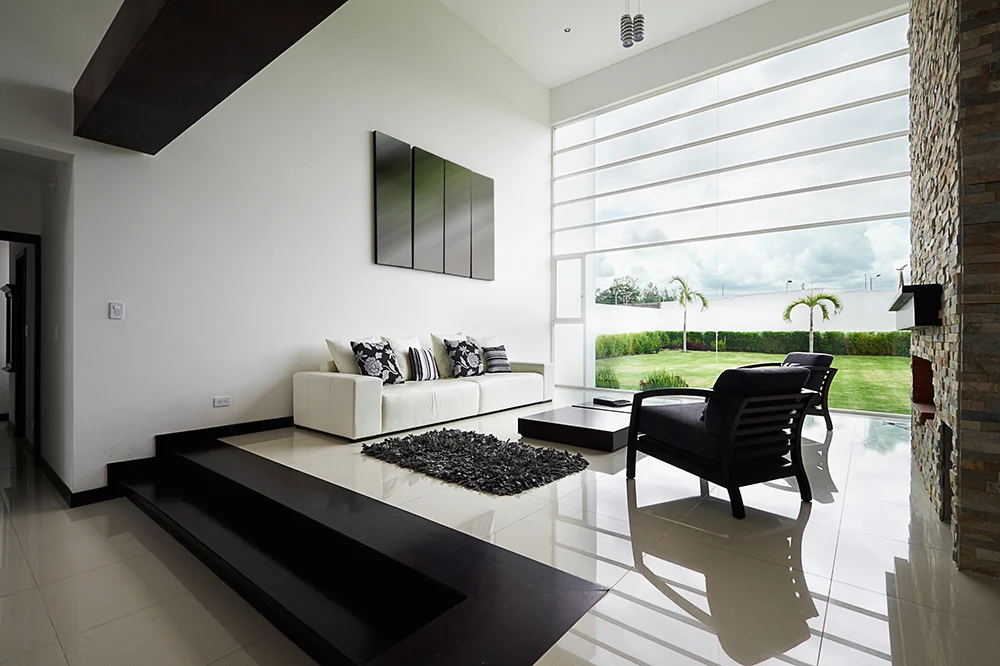
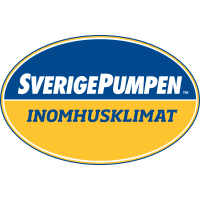

Värme i huset.Trygghet i vardagen.
Din VVS-partner i Ystad och på Österlen. Från kranen som droppar till fastighetens nästa energilösning – med erfarenhet sedan 1950.
Ett nummer.
Hela fastighetens VVS.
Vi hjälper dig med det lilla som behöver åtgärdas och det stora som ska bli rätt från början.
Service & reparationer
Från droppande kran till nytt badrum. Hjälp med det som ska fungera varje dag.
Läs merVärmepumpar & kyla
Rätt inomhusklimat börjar med rätt lösning för huset och människorna i det.
Läs merEntreprenad
Projektering och installation vid nybyggnad, ombyggnad och större renoveringar.
Läs merSolceller & energi
Solenergi, batterilagring och laddning genom Sture Andersson Energi AB.
Läs merÖsterlen i ryggen.
Framtiden framför oss.
Sedan 1950 har Sture Anderssons arbetat med vatten och värme. I dag möter samma lokala förankring moderna lösningar för hela fastigheten.
Lär känna Sture Anderssons
Rätt hjälp börjar
med rätt person.
Välj det som ligger närmast ditt behov. Du kommer direkt till en kontakt som kan hjälpa dig vidare.
En sak mindre att bekymra sig om.
För reparationer, ändringar och service i din fastighet. Christian hjälper dig till rätt avdelning.
Läs om vvs-serviceRätt temperatur. Rätt lösning.
Prata med Richard om värmepumpar, kyla och energilösningar för din fastighet.
Läs om värme & energiEn bra början på nästa bygge.
Prata med projektledningen om nybyggnad, ombyggnad och VVS-entreprenader.
Läs om entreprenadFrån rätt reservdel till nytt badrum.
Andreas och butiken i Ystad hjälper dig med sortimentet. Se öppettider inför ditt besök.
Läs om butik
Ett bättre klimat.
Hemma hos dig.
Värmen ska passa huset. Kylan ska passa livet. Vi hjälper dig att hitta rätt bland flera typer av värmepumpar och komfortkyla.
Upptäck värme & kylaVärmepumpar från flera tillverkare.

Det är kunderna
som känner skillnaden.
Urval av omdömen publicerade på Reco. Läs alla för att få hela bilden.
”Mycket bra och snabbt utförande. Duktig och trevlig personal.”
”Snabb personlig service allt från butik till installation”
Betyg avläst 8 oktober 2026. Utvalda äldre omdömen. Företagsprofilen är inte verifierad av Reco. Betyget uppdateras inte automatiskt här.
Kom in.
Vi finns i Ystad.
Besök vår butik på Norra Zinkgatan 15. Här finns allt från reservdelar till badrumsinredning – och människor att fråga.
Hitta hit & se öppettiderSöker du oss i Simrishamn? Så når du vår service.
Välkommen till butiken.
- Kontor, måndag–fredag
- 07.30–16.30
- Butik, måndag–fredag
- 10.00–16.00
- Lunchstängt
- 12.00–13.00
Vi börjar med
ditt behov.
En reparation, en ny värmepump eller ett större projekt? Berätta vad du vill få gjort, så tar vi nästa steg tillsammans.